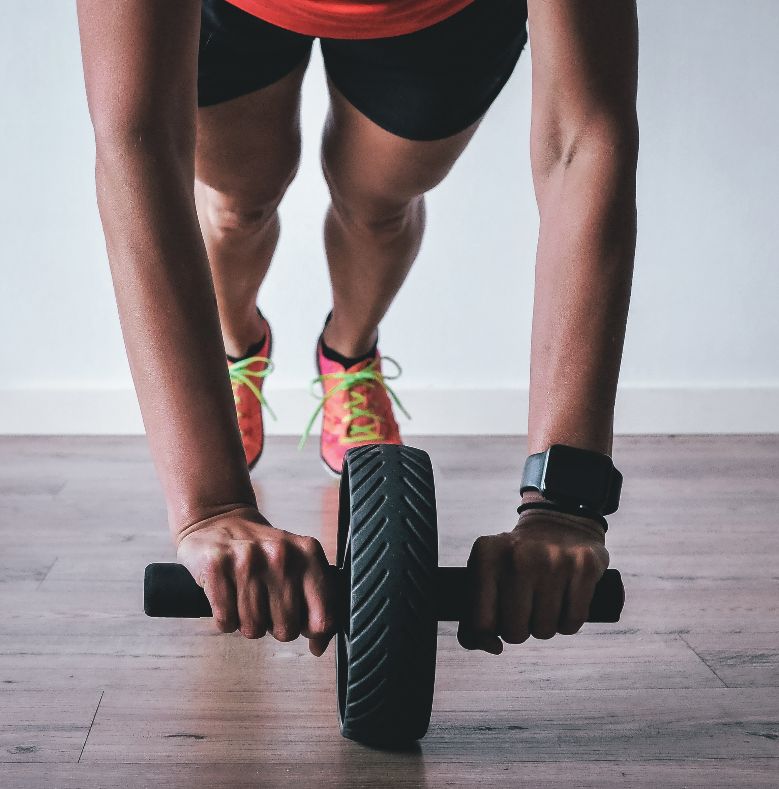

Rule #1: CONSISTENCY!
In fitness, consistency always has to be part of your plan. When it comes to weight management I used to tell my clients the number one rule is Nutrition. Mastery of the food you choose to consume is key. On the other hand, nothing you do in the gym will change what you decided to eat. No I tell them that CONSISTENTCY is what holds the two together. If you can be consistent with one then the other can certainly be put in line as well. And when you have both nutrition and fitness on the right track then you have maximal control. Name one thing you do consistently every single day? One thing you can't go a day without doing? Mine is reaching my arms up and stretching when I get out of bed in the morning. Maybe this seems trivial to you, but I look foward to it. It relaxes me, and I can even say it brings me joy when I think about it. It sets me up for the day ahead and gets my whole body in motion. Do you have anything that makes you feel that way?
When it comes to fitness and nutrition I think of what would make me get into the same mindset as my morning stretch? LOL! Writing about this makes it seems so ridiculous, right? Well what do look forward to about fitness? Music is the best part of fitness for me...it really brings me joy! I get to listen to music whether I workout on my own or if I decide to take a class. I get to sweat...which can be a little gross, but I like that it shows me a little bit of proof that I worked hard and it also tells me that I'm hydrating properly (that's the nerd in me). And as for nutrition when its healthy it always tends to be good! There so many things to eat...there has to be something healthy that you like. Consistency in your fitness program which usually leads to consistent nutrition choice base (or vice versa). When I think of food it brings me comfort because it always makes me think of my family and friends. Although they may not all agree with the healthy life I live I still love to be around them. Also throughout the years some of my weird food ideas have rubbed off.